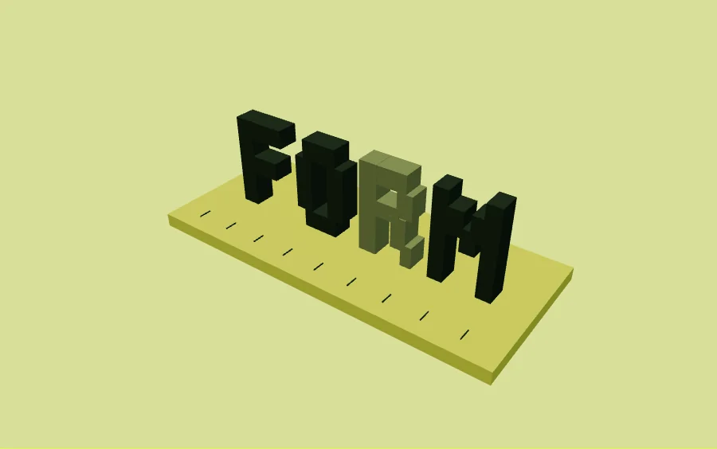

Type specimen
Movein type
One alphabet, three settings. Change the weight and see the same word take up space differently.
Try a word100300500700900
FORM
A typeface under tension
Edit the specimen with your own text. Each preset uses the same variable font so the change occurs inside the letterform.
Weight 240
At a light weight, the counters sound almost as loud as the strokes.
FORM
Type CSS generator
Adjust Geist’s weight, size and tracking, preview your specimen and copy the CSS.
3D model
Extruded lettering
